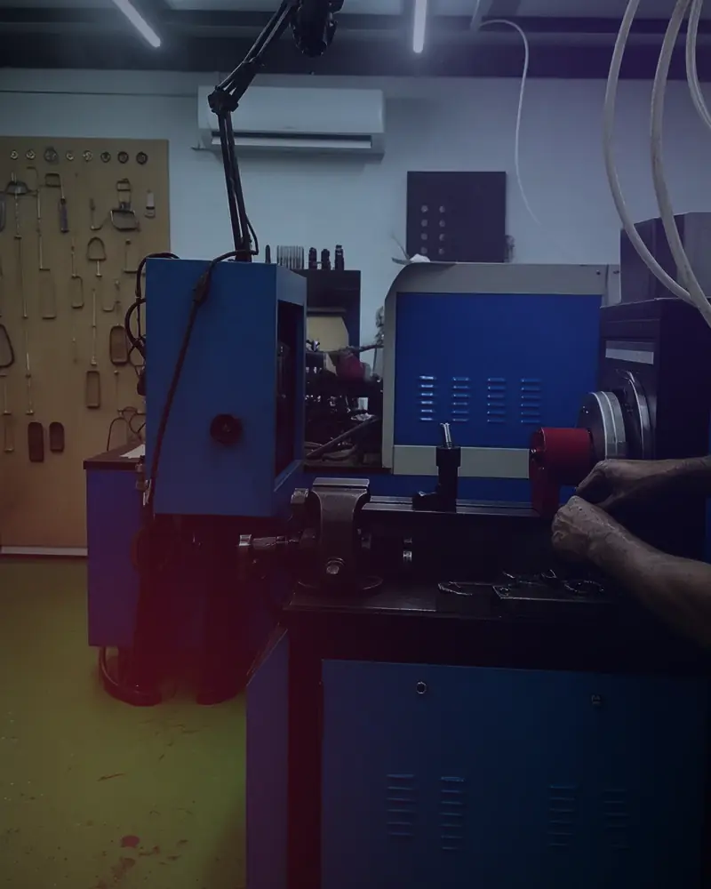
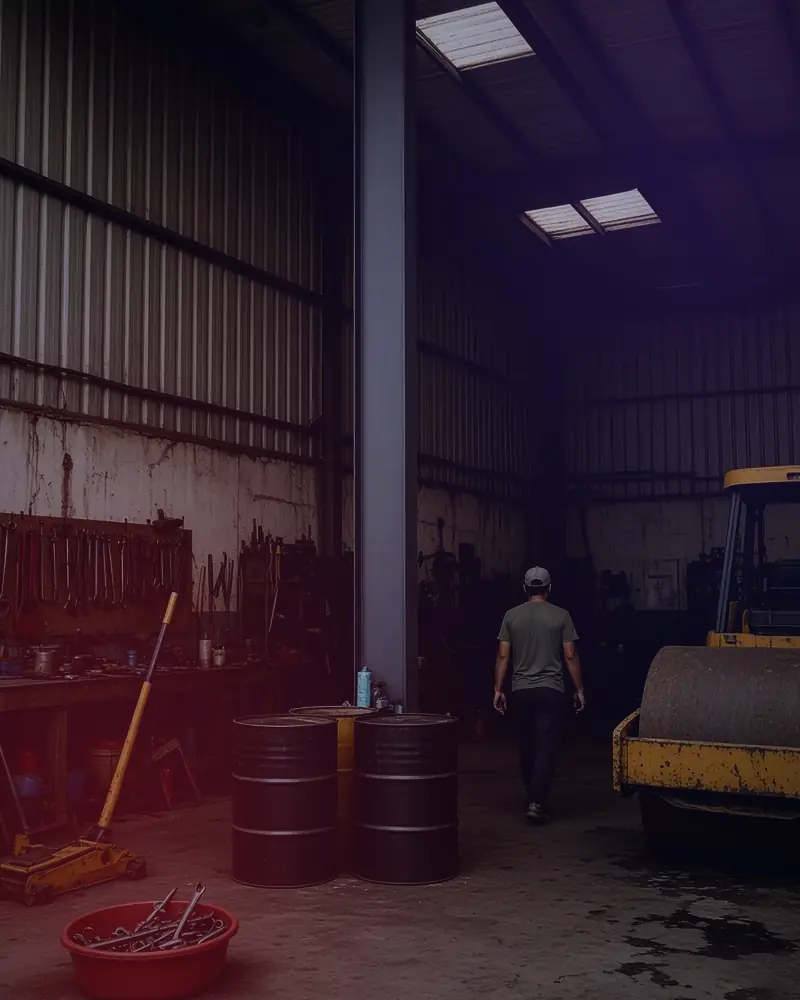
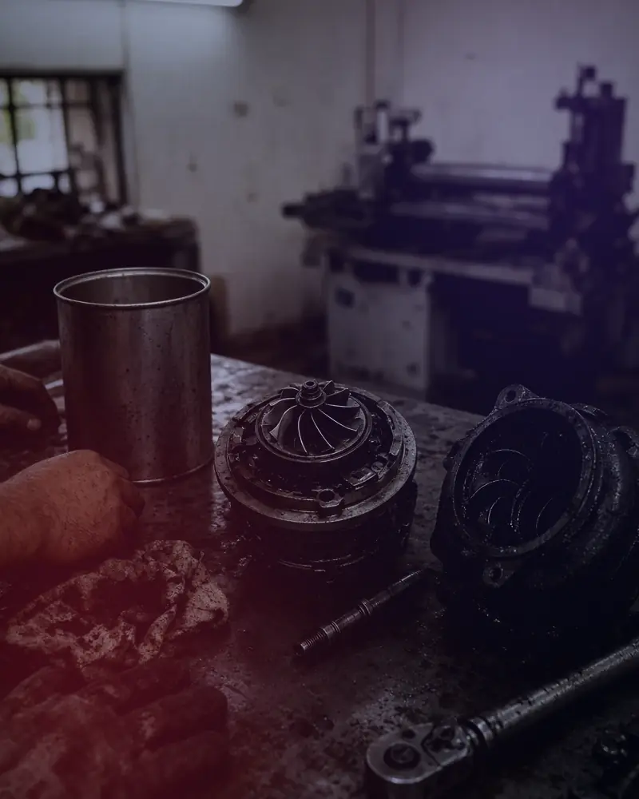
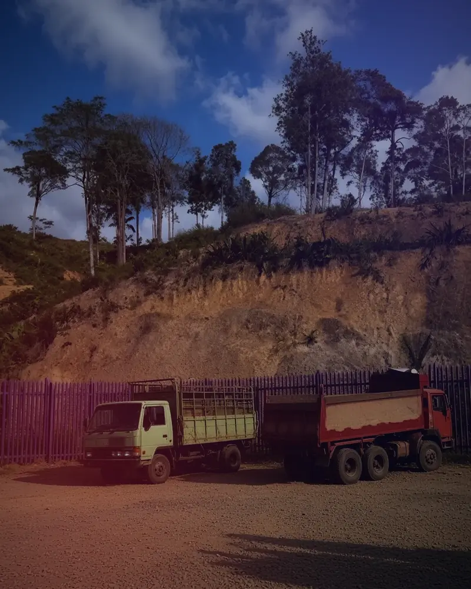

KH DIESEL FUEL PUMP SDN BHD ialah bengkel diesel di Batu 10 di Jalan Bintulu–Miri, Bintulu. Kerjanya ialah pam bahan api diesel, pam common-rail, injector dan turbo.
Bengkel Batu 10
Bengkel ialah bangunan krim dua tingkat dengan yard dan kanopi di hadapan, berhampiran Kampung Penan Muslim Batu 10 dan Jalan Nyabau. Di dalamnya ada bilik bersih dengan bangku ujian pam di atas lantai hijau di sebalik langsir jalur, bilik ujian common-rail berasingan, rak untuk turbo dan alat ganti, serta bay di belakang untuk enjin berat.

Ilustrasi bengkelJenis kerja
Pam, injector dan turbo diuji sebelum dibaiki dan diuji semula selepas itu. Pelanggan membawa pikap diesel, lori ringan, lori, koc dan jentera berat.

Ilustrasi bengkelSiapa yang mengendalikannya
Perniagaan ini dikendalikan oleh Hii Wei Soon. Anda boleh hubungi bengkel melalui WhatsApp di 019-854 5433 atau talian rumah 086-340356.
Papan bengkel
- Lokasi
- Batu 10, Jalan Bintulu–Miri, Bintulu
- Bilik
- Bilik bersih dengan bangku ujian pam, bilik ujian common-rail, bay enjin berat
- Waktu
- Isnin–Sabtu 8:00 pagi–5:30 petang
- Telefon
- 019-854 5433 (WhatsApp) · 086-340356 (talian rumah)
 Ilustrasi bengkel
Ilustrasi bengkel Ilustrasi bengkel
Ilustrasi bengkel Ilustrasi bengkel
Ilustrasi bengkel Ilustrasi bengkel
Ilustrasi bengkel
Ilustrasi bengkel Ilustrasi bengkel
Ilustrasi bengkel Ilustrasi bengkel
Ilustrasi bengkel
Ilustrasi bengkel Ilustrasi bengkel
Ilustrasi bengkel Ilustrasi bengkel
Ilustrasi bengkelMakmal kejituan diesel Bintulu
Cara kerja dijalankan
- DiterimaWhatsApp gambar dahulu, kemudian bawa alat ganti, kenderaan atau jentera ke Batu 10.
- Dibuka dan diperiksaPam, injector atau turbo dibuka dan diperiksa. Anda terima dapatan dan sebut harga sebelum pembaikan bermula.
- Dibaiki di bilik bersihSetelah anda setuju, pam dan injector dibaiki di dalam bilik bersih yang dikawal habuk.
- Ditentukur dan diuji di bangkuIa dilaras dan diuji di bangku ujian, dan anda lihat hasilnya.
- Dipasang dan diuji di jalanAlat ganti dipasang semula dan kenderaan diuji di jalan.
Cari bengkel
Sublot 14 of Parent Lot 1337 & Lot 341, Block 33, Kemena Land District, 97000 Bintulu, SarawakBatu 10, Jalan Bintulu–Miri, Bintulu
| Isnin hingga Sabtu | 8:00 pagi hingga 5:30 petang |
|---|---|
| Ahad | Tutup |
Waktu Malaysia (Bintulu)
Pernah buat kerja di sini? Ulasan Google ringkas membantu pemilik diesel lain di Bintulu mencari bengkel ini.
Tulis ulasan GoogleHantar gambar pam atau injector anda melalui WhatsApp untuk semakan pantas.
WhatsApp 019-854 5433Isnin–Sabtu 8:00 pagi–5:30 petangHantar gambar bahagian dahulu
WhatsApp kami gambar pam, injector atau turbo yang jelas, serta kenderaan atau mesin asalnya.